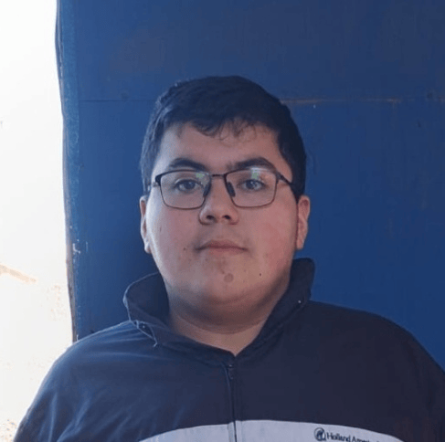
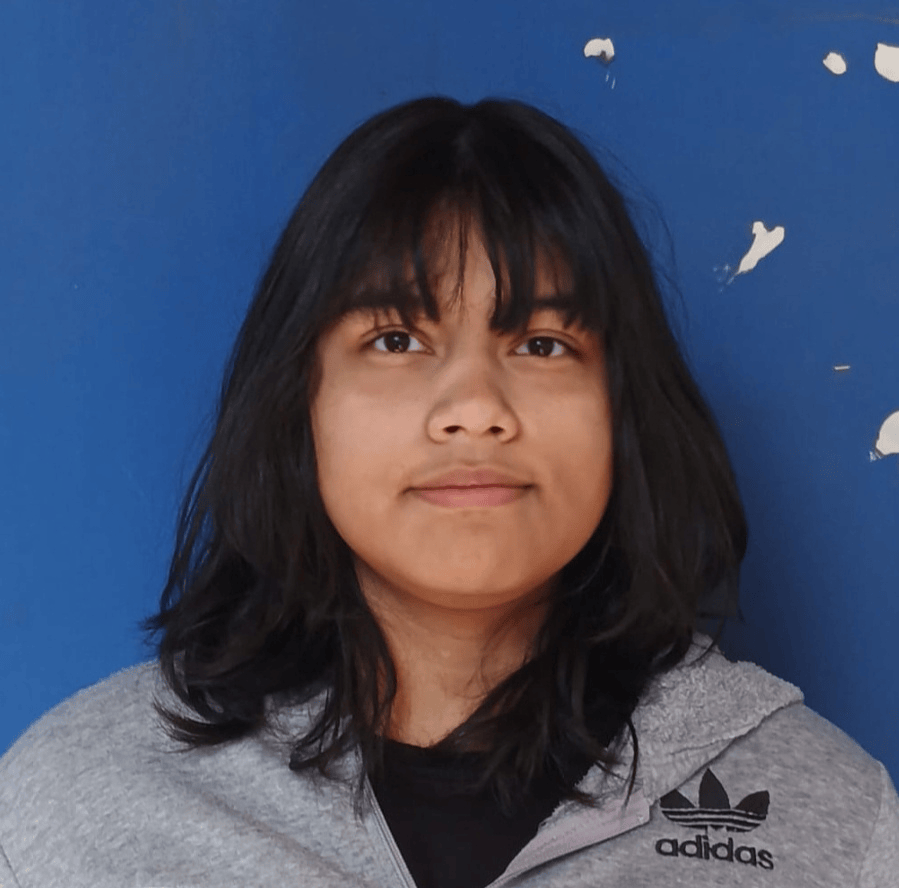
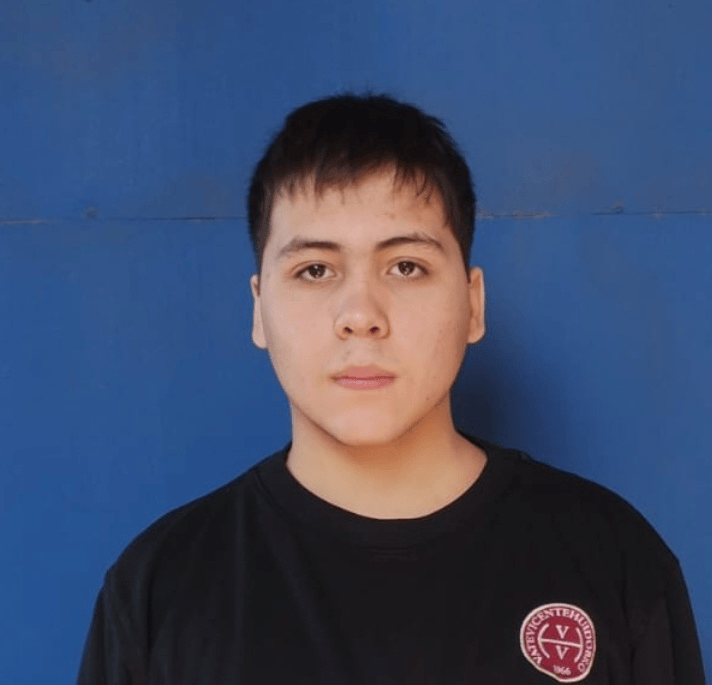
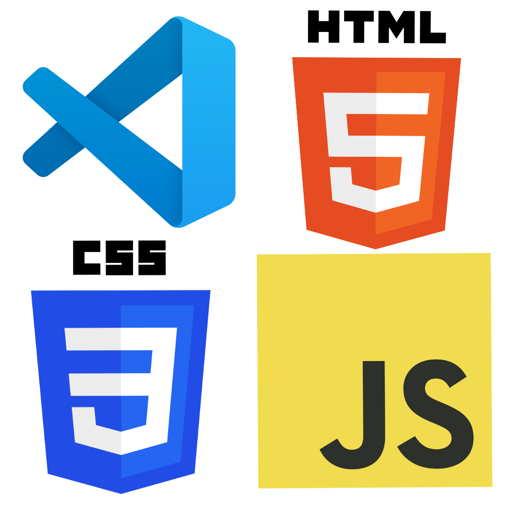

Xavier Olmos
Project LeaderLeader, scriptwriter, and logo designer for the project.
Environmental Project
Transforming waste management and promoting community recycling in Chile through social innovation and BarrioLimpio technology.
Learn more ➔As a group, we selected SDG number 12: "Responsible Consumption and Production". SDG 12 is the twelfth goal of the UN 2030 Agenda, focused on ensuring sustainable consumption and production patterns. Its main pillars are the efficient use of natural resources, reducing waste generation, and decreasing food waste.
The SDGs (Sustainable Development Goals) are a global plan by the United Nations featuring 17 goals to end poverty, protect the planet, and achieve peace before 2030.

The lack of infrastructure in Chile directly impacts citizens' recycling capacity, offering very few enabled areas, trash bins, and collection centers. This causes the constant accumulation of waste in urban areas such as streets, parks, and even natural environments.
In Chile, approximately 19.6 million tons of solid waste are generated per year (55% industrial and 42% household). In Santiago alone, there are between 4,000 and 6,000 containers for millions of tons of waste. It is a critical problem that requires community innovation.

We are EcoloChile, a multidisciplinary team of young students committed to sustainable transformation and social innovation.
We were born out of the urgency to solve one of the most visible problems in our environment: the infrastructure crisis in waste management and the recycling deficit across our country's municipalities.

Meet the young minds behind the development of EcoloChile and BarrioLimpio.
Leader, scriptwriter, and logo designer for the project.

In charge of completely developing the informative website.

In charge of organization and creating the name for our stand.
In charge of creating the web application prototype on "Proto.io".

In charge of creating the project presentation on Canva.
Our project is based on cooperation through geographic proximity via geolocation. The application connects users under two simple profiles on the map of their municipality:
Who they are: The person who wants to recycle but doesn't have time or prefers not to leave home.
Their action: Gathers their materials, opens the app, and taps: "Bag Ready".

Who they are: Young scouts, sustainable neighbors, or local base recyclers in the municipality.
Their action: Opens the app, checks the map for "active spots", and picks up the materials.

The generator gathers their waste and taps the button in the app to request pickup.

A nearby collector sees the alert on the map and starts the pickup route.

The bag is collected from the home and the successful eco-delivery is confirmed.

For the website development, we used Visual Studio Code as our development environment. We built the structure using semantic HTML5, the aesthetic layer using CSS3 with responsive design, and interactivity with JavaScript.
The layout for the interactive app prototype was designed using the Proto.io platform, complemented with guidance for crafting clean and intuitive interfaces.

Contact information: tomasmariqueo@liceovvh.cl